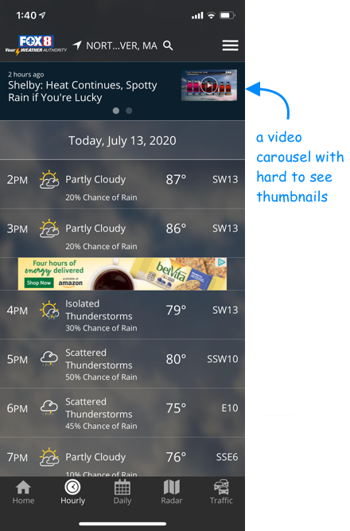
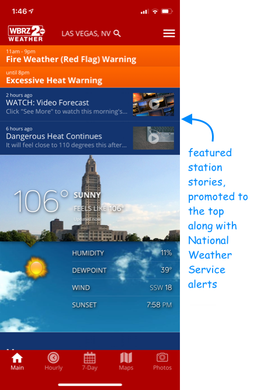
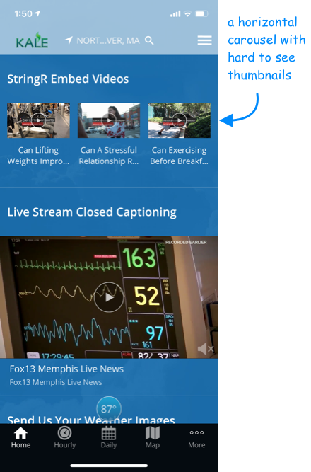
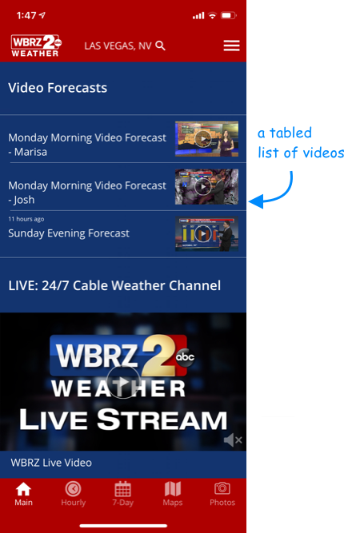
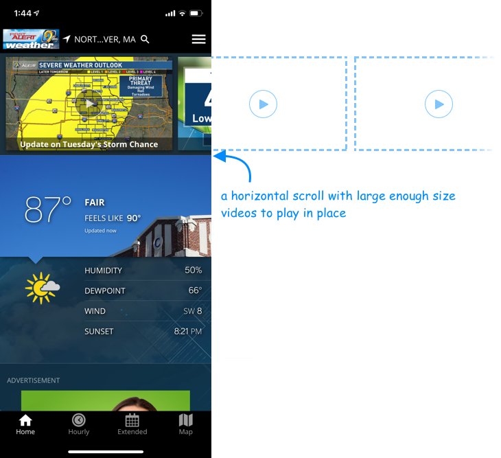
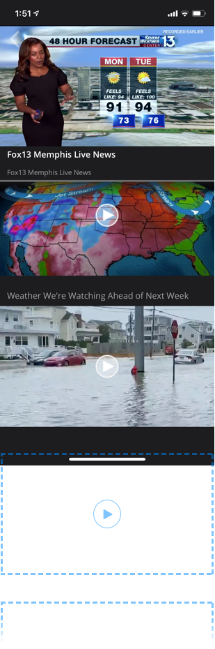

October 2017 – February 2018
Case Study
Video View Optimization
TV Stations produce a lot of digital content that can be re-purposed for the mobile platform. Our team advocated for increasing video content volume and optimizing for mobile consumption. We had a strategic vision – short entertaining weather stories would engage and entertain users; the more videos that are viewed, the more video ads will be served and the more revenue will be generated.
Problem Statement
TV Stations were not focusing on video production tailored for the mobile platform. They needed to see low cost results before further investing in high volume production.
Goal
Design engaging multi-point video viewing experiences throughout the app in order to promote more video consumption and more ad revenue.
My Role
- Collaborate with a team of executives, business offering managers, iOS/Android developers and QA engineers
- Facilitate brainstorming and white-boarding sessions with stakeholders
- Research news and competitive weather apps
- Translate ideas into design concepts
- Lead UX/UI design; build out wireframes, deliver high-fidelity prototypes
- Deliver visual & technical specs to development team
- Conduct visual QA and provide feedback to development team throughout implementation
- Collaborate with business managers to measure impact after implementation
Existing Solutions
Before I started working on a potential solution I evaluated what had already been implemented in the app. Most of videos were presented by small thumbnails. It was almost impossible to see what the video was about.





Horizontal Scroll
I felt that larger size videos were much more engaging. Horizontal scroll and maximizing video size seemed like the best solution to me. Horizontal scroll saves vertical space in the app. The size of the thumbnail is big enough to give the user a good preview and at the same time suggests there are more videos in the scroll. Autoplay and auto-advance options could be set up by the client in the web-based configuration portal.

Measurable Results
This horizontal carousel design increased video viewing an average of 146% for a typical TV station (WKRB Nashville), over the 6 month period following implementation.
Vertical "Infinity" Scroll
Tapping on any video in the app launched a Video Player originally.
What if tapping on a video instead took the user to a collection of all video content available in the app, so that users don't have to hunt for more videos throughout the app? The user can stay on the video library page and browse through all available weather stories. Each video on that page will have a pre-roll ad. More video views – more monetization

Measurable Results
After the proposed solution was implemented and went live, stations started getting measurable results: increased video views and traffic. Providing videos that are properly timed, scaled and targeted for mobile user behaviors increased video views by 441% for a group of over 130 TV stations.